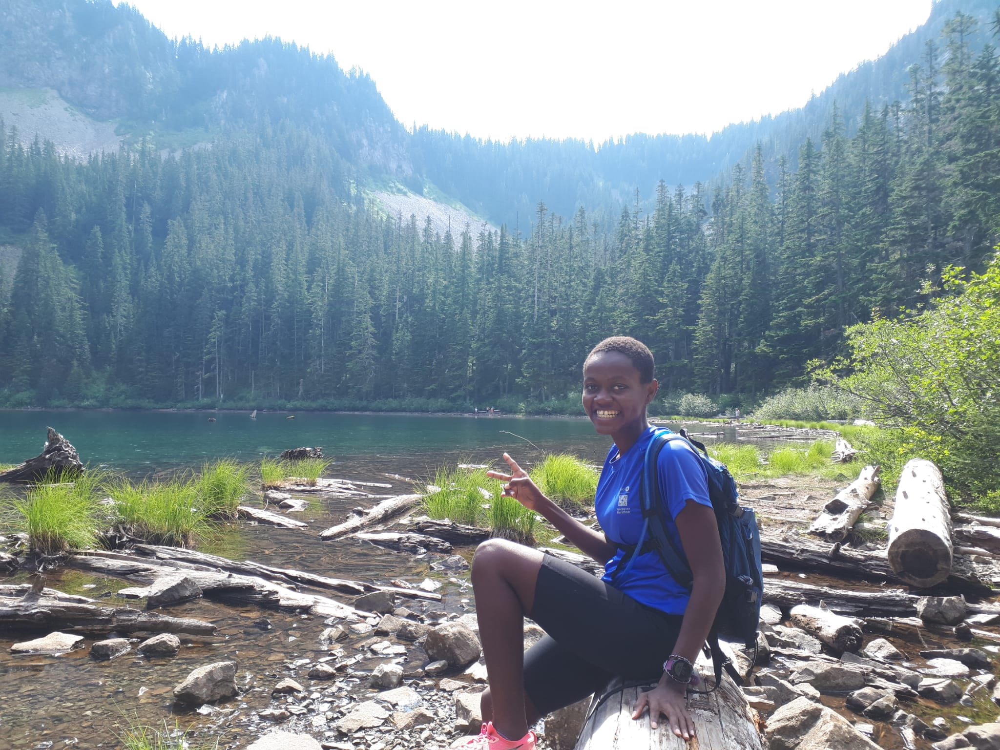

So I picked up a new sport recently and as you may expect, it involves running. I’ve been running up mountains and I have to admit I’ve been having too much fun with it. I’ve always been fond of both running and mountains. They both present opportunities for challenges, scenery, connection and of course endorphins. Considering the effort needed to run uphill, it just made sense to run on the road and hike mountains at a leisurely pace. While hiking, I would see trail runners and think they must be crazy to exert themselves so hard for so long. Well, I’m here to report that I’ve joined those crazy people. From my short experience, I’m going to share a few lessons I learnt that extend well beyond the trail.
- Preparation is key
Mountains are an exciting destination; far from civilization, uneven terrain, wild animals and a handful of trails to go around, adventure is guaranteed and so is danger. Sometimes, it is preparation that separates a near death experience to a deadly one. A lot of preparation goes into a run, from picking out a route to stashing the backpack. A navigation system is important since getting lost could add significant time and stress to your itinerary. Moreover, you have to research the route and anticipate your needs for both survival and comfort. Its important to stash more than you need but light enough to run with. Preparation also means learning the protocols for wild encounters. Trail runners don’t just happen to be on the trail, they planned to be there. They are prepared for most of what the mountain will throw at them. We could use similar level of preparedness in our lives too, at the very least it will make our lives a lot less stressful.
- Embrace uncertainity
The fact that mountains are not optimized for our convenience makes them a breeding ground for the unexpected. Preparation helps but it can only go so far. Even after covering all your bases, you can’t predict super steep sections or muddy ponds or fallen trees or snakes or bears or … you get the point. The thing about mountains is you have no other choice but to accept it and deal with it. Such tenacity is rewarded by stories we continue to tell years later. In the face of unpleasant surprises most of us waste a lot of time whining, wishing and blaming. Wouldn’t it be more productive if we skipped ahead to acceptance? Life happens, we can choose to embrace it whether or not it aligns with our plans.
- Keep moving
Its obvious that trail running is hard; its hard enough to run on a flat ground, let alone run uphill for an extended period. The impact, exertion and muscle work can be very taxing on your body. Over the course of a long run you will at some point feel like you have reached your limits, in other words, hit the wall. Its a lot more stressful on the mountain because you have to get back to civilization using the same jaded legs. What has helped me in these moments is continued movement, however slow or ridiculous looking. In the moment, everything sucks but as long as I’m moving forward, there is hope. They call it trail running but what it really is, is trail moving. So hike, walk, crawl, limp if you have to, propel yourself forward and with time you’ll pick up momentum again. The same applies to the metaphorical walls we hit in life; its okay to slow down but keep moving.
- Be present
Considering all the variables involved in trail running, mindfulness is not a choice but necessity. Mishaps can be expensive at best and deadly at worst. Not only do you have to scan your sorroundings (roots, leaves, loose rocks, wild animals etc) you also have to pay attention to your body cues (hunger, thirst, fatigue) and adjust accordingly. You’d be wrong to think that that is stressful because an engaged brain is a happy brain; it works with the things within its control and therefore has less room for stress. Mindfulness does wonders for our mental health, we could all use more practise.
- Find your people
Those who say we go to the woods to avoid people clearly haven’t been in the woods. Sure we go for the peace and quiet, but interacting with like-minded people makes for a much more pleasant experience. Be it strangers cheering us, sharing snacks or the notes we share with fellow runners, its literally wild out there. You know its a great community when everyone is just happy to be there. Whatever your interests are, find your people, it will be a lot more fun.
So there goes my 2, or rather 5 cents from trail running, thanks for sticking around! Its been a wild ride that continues to push my limits. Follow my adventure @imaculatem and hope to see you on the trail!
